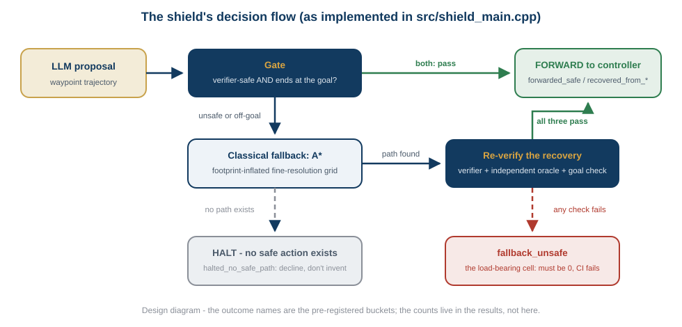
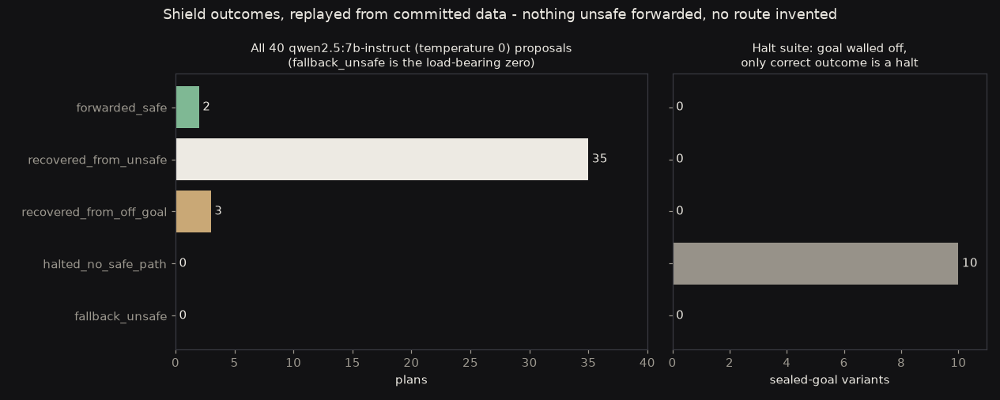
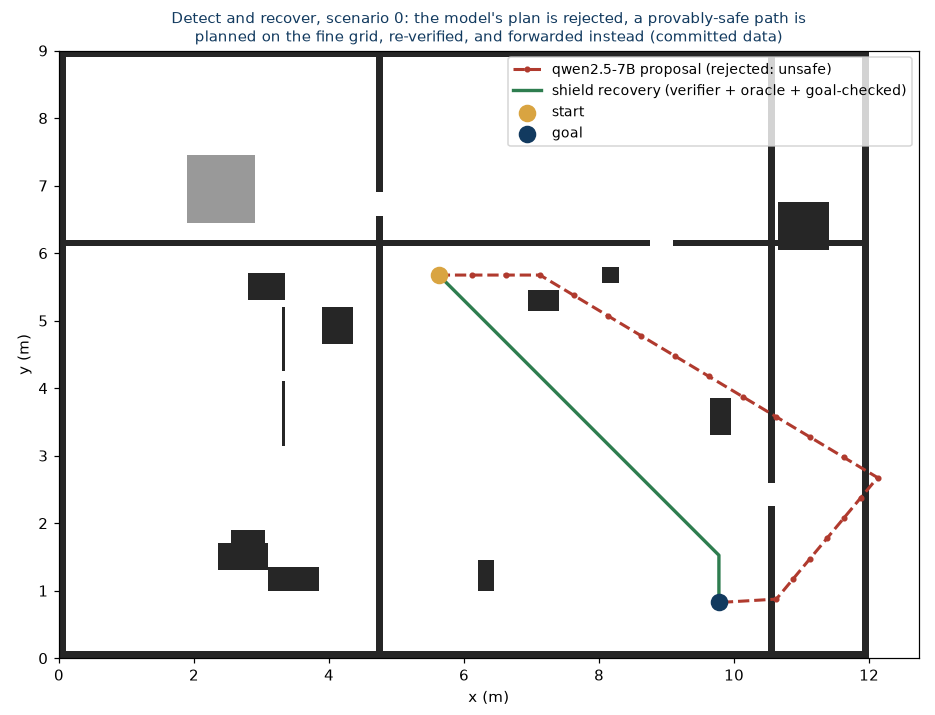
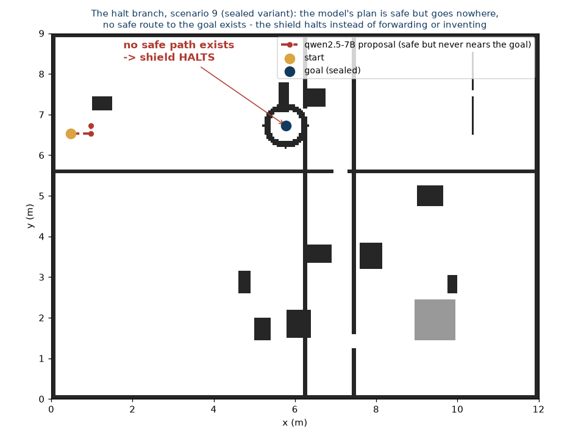

An LLM proposes a route. A deterministic verifier checks it. On a fail, a provably-correct classical planner recovers a safe path, which is re-verified before anything moves. And when no safe path exists at all, the shield stops - because knowing the difference between "the model was wrong, here's the fix" and "there is no safe action" is what safe autonomy actually means.
This repository is the sentence that connects my other work: LLM planners fail in measurable ways (plan-failure-bench), so I detect those failures deterministically (the safety verifier) and recover with a path from a planner that is provably correct (the planning core) - or halt when no safe path exists. It is deliberately a composition of already-verified components, pinned as git submodules at exact commits: no new algorithms, just the full detect-and-recover loop, with every guarantee re-proven by CI on every push. The term shield follows the safe-RL usage of Alshiekh et al.
The forward gate is goal-aware: a proposal passes only if it is both verifier-safe and actually ends at the goal. That requirement exists because a dry run caught a real case - a qwen proposal that was perfectly safe and went nowhere near the goal. Safety and task-success stay separate judgments; the gate requires both, and the design change is documented in the pre-registration commit, made before any result was published.




Discipline, same as every project on this site: the outcome taxonomy was committed before the first published results, every number above is quoted from the tool's output, the figures are rendered from the evaluation's own committed artifacts, and CI replays the entire evaluation - failing on any unsafe fallback or any sealed-goal case that doesn't halt.